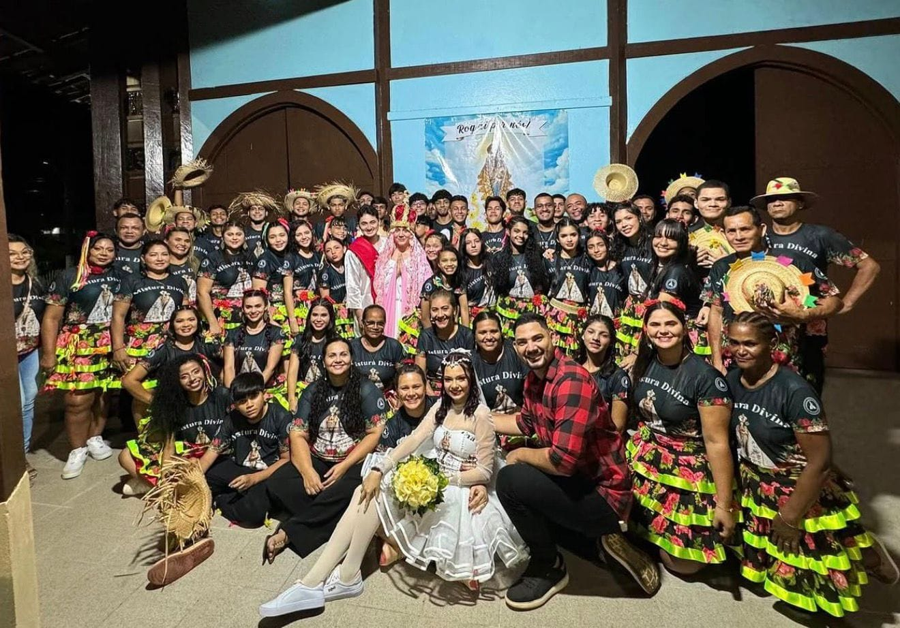
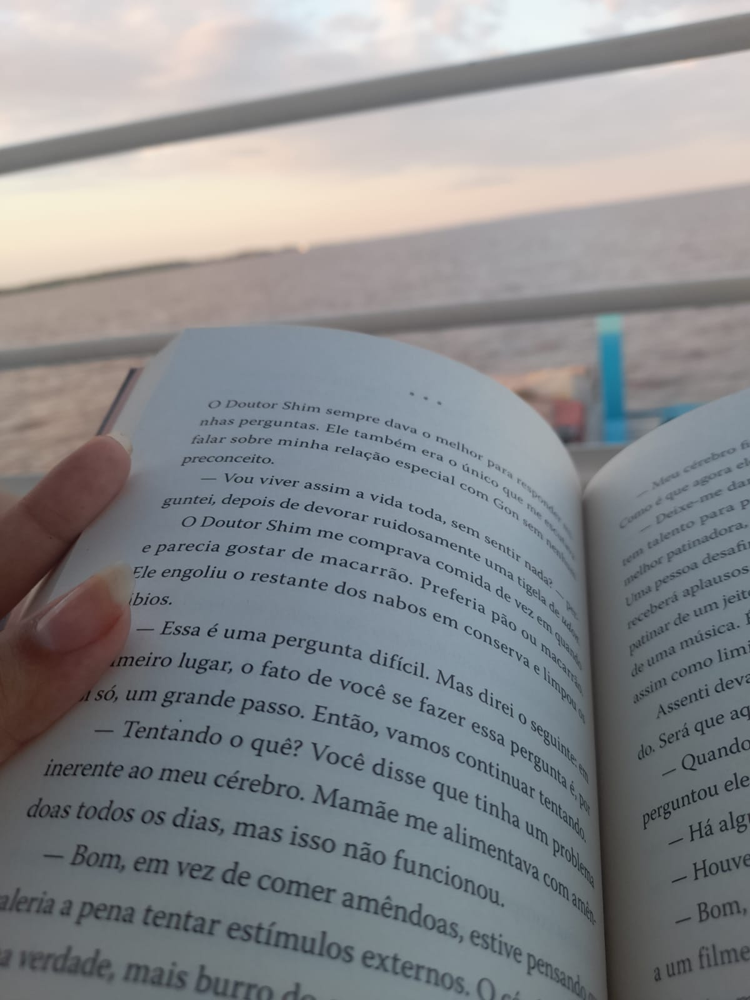
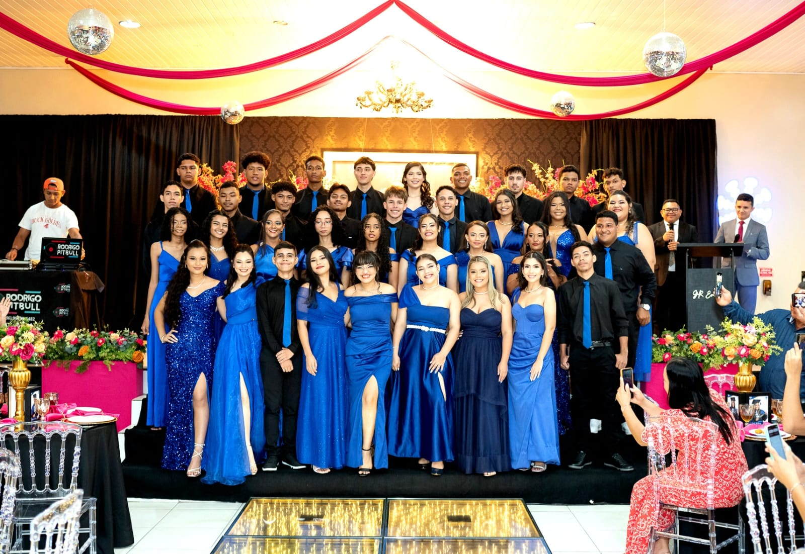

Comecei a me interessar na Área de Ti pelo fato de desde muito pequena sempre me interessar por vídeo games.
Eu constumava a pesquisar mais sobre a teoria da computação de forma geral e logo após eu ter assistido o filme "O jogo da imitação",
foi o momento que me apaixonei pela área de verdade.
Vindo do interior do Norte, eu não conseguia encontrar áreas concretas da computação, pois seu mercado ainda é bem limitado
então quando terminei meu ensino médio me mudei para o sul do país e entrei na faculdade de ciência da computação.
Um dos meus favoritos é Ler nas minhas horas vagas, sou apaixonada pela leitura desde a minha adolescência (Meus generos favoritos são Terror/Suspense e Fantasia).
Eu também sou apaixonada pela dança, comecei a fazer ballet nos meus 6 anos de idade e até hoje eu pratico com todo meu amor, onde durante a minha adolescência eu fazia contorcionismo e dança contemporânea.
Eu também amo artes cénicas; Fazia atuação em teatros durante o meu ensino médio, e até hoje sou encantando por musicais.


